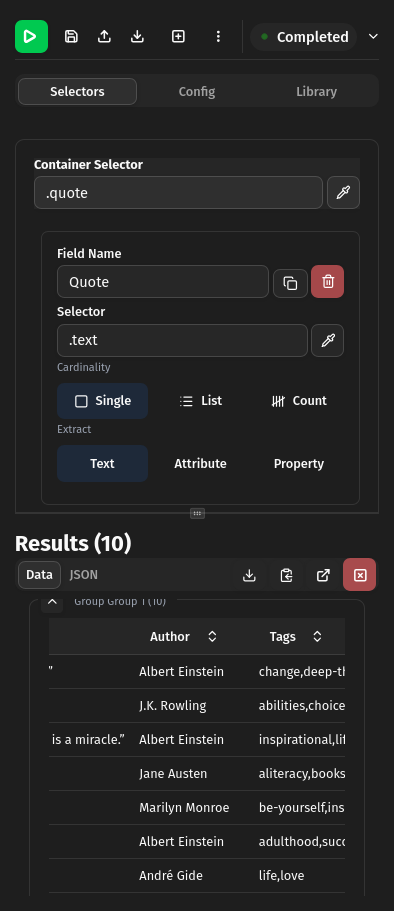
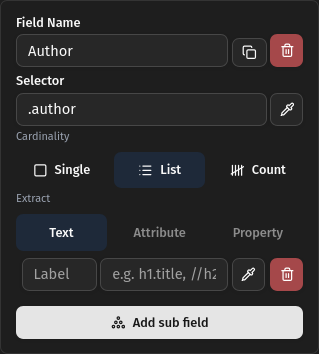
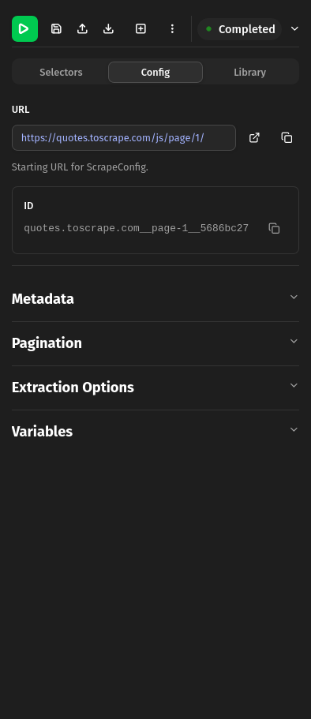
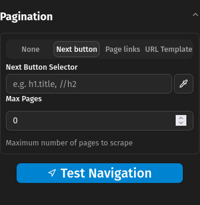
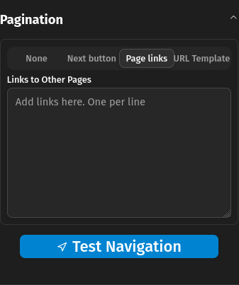

Extension UI Overview
This page contains annotated diagrams of the browser extension User Interface.
View of Main UI

1
2
3
4
5
6
7
8
9
10
11
12
13
14
15
16
17
18
19
20
21
22
23
24
25
26
27
28
- Run config
- Save config to browser storage.
- Load config to from a file.
- Save config to a file.
- Add selector group. Useful for extracting different data from same page.
- Menu with more actions.
- Status indicator.
- Show logs.
- Selector definition tab.
- Scrape configuration tab.
- Saved configs library.
- Selector (CSS or XPath) for element containing individual items (optional).
- Start interactive element picker.
- Field name input.
- Duplicate field.
- Delete field.
- Field selector input (CSS or XPath).
- Start interactive element picker.
- Selector finds one element.
- Selector finds multiple elements.
- Selector finds and counts multiple elements.
- From found element(s) extract text, a specific attribute (href, src data-id etc) or a specific property (innerHTML, outerHTML).
- View results as Table or JSON
- Collapse result groups. See (5.)
- Download results in different formats.
- Copy results in different formats.
- Open full page view in new tab.
- Clear results.
View of Field in List mode

1
2
3
- Select multiple elements using given selector.
- What to extract from each element, text, attribute or property.
- Select nested elements on each element. When defined the selector acts like a container selector and the sub-fields are fields in that container.
View of Field in List mode with Sub-fields

1
2
3
- Sub field name.
- Sub field css/xpath selector. Currently only text is extr
- Add another sub-field of same level.
View of Config Tab

1
2
3
4
5
6
7
8
9
- Main URL being scraped.
- Open URL in new tab.
- Copy URL to clipboard.
- Auto-generated unique id of current config.
- Copy ID to clipboard.
- Pagination section, see <pre>packages/core/src/schema.ts:ScrapeConfig</pre>
- Pagination section, see <pre>packages/core/src/schema.ts:PaginationConfig</pre>
- Pagination section, see <pre>packages/core/src/schema.ts:ExtractionOptions</pre>
- Variables section. <b>Not implemented</b>
Next pagination config

1
2
3
- Selector (CSS or XPath) for next button.
- Maximum number of pages to navigate. Zero means unlimited
- Test navigation by moving to the next page.
Links pagination config

1
2
- Input for links to navigate to. One per line.
- Test navigation by moving to the next page.
Template pagination config

1
2
3
4
5
- Input for URL template. The template is used to create the URL for the next page.
- Start page number.
- Number to add to previous to get next page
- Maximum number of pages to scrape. Zero means unlimited
- Test navigation by going to next page using defined values.
Screenshot of Config Library

1
2
3
4
5
6
- Type to search in id or url fields of configs
- Change config sort
- Rename saved configuration.
- Delete saved configuration.
- Show configuration definition.
- Load configuration into sidebar
Screenshot of Full Page View

1
2
3
4
5
6
- Results Tab.
- Logs Tab.
- Snapshots tab. Saves data when extraction runs in case session is interrupted.
- View results as Table or JSON.
- Download data in different formats.
- Copy data to clipboard in different formats.